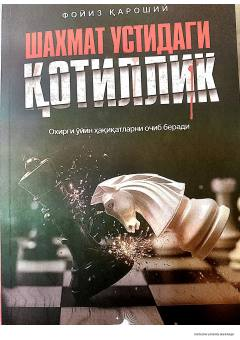

C0O'limga hukm qilingan mahbus va xususiy izquvarning sirli uchrashuvi haqidagi detektivhikoya.
Ushbu asar o'limga hukm qilingan mahbus va xususiy izquvar o'rtasidagi sirli uchrashuv hamda jinoyat tafsilotlarini ochishga qaratilgan tergov jarayonlarini hikoya qiladi. Bosh qahramon Maykl o'zining aybsizligini isbotlash uchun xususiy detektiv Купер (Kuper) bilan bog'lanadi va uni qamoqxonaga yordam so'rab chaqiradi.